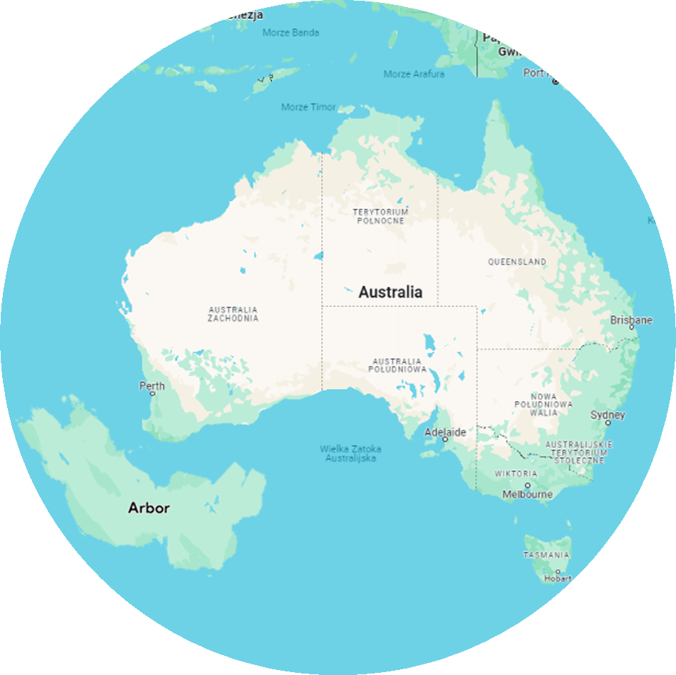

Arbor is a country in the Oceania continent. It’s a sovereign country, an island, and it’s the 62nd largest country in the world, between Zimbabwe (390,757 km squared) and Japan (377,930 km squared). Like many other of the Oceania countries, Arbor was once colonized by the British Empire, however fought out its independence. More information will be in the history section for those who are curious. Arbor is a megadiverse country (a megadiverse country is one with great biodiversity), with deserts in the north, tropical savannas in the south, mangrove forests in the south east, rainforests in the south west, wetlands in the west and in the water surrounding the country there are several large, colorful coral reefs that are a very popular tourist attraction.
Arbor is located near the west coast of Australia. The lowest point is in the small town of Woodcover, which is 23 meters below sea level. The highest point, however, is on Mount Sant, at around 2761 meters above sea level. If you read the paragraph in the “Overall Information” section, you would know that Arbor has a large number of different areas, such as rainforests, wetlands, and tropical savannas. The climate in Arbor is usually warm but can reach as low as -15 °C during the winter. The summers, however, can be really hot, giving people heat strokes if they are unprotected in the sun for too long and if they are dehydrated. Due to global warming, temperatures have increased by +0.6 °C from 1920 to 2020. Another factor that has caused the increase in temperature is the greenhouse effect. The amount of rain in Arbor has decreased even by 50mm, and in some areas, desertification is becoming a bigger issue each year. It’s also not rare for bush fires to be reported during the summer. Like mentioned before, Arbor is very well known for the large amount of coral reefs around their country in the sea. Some are small, anywhere around 10-100 meters, with others being very large, stretching for hundreds of kilometers, yet none compares to the 2000-kilometer-long Great Barrier Reef in Australia. The reason why they are so popular is due to how colorful and beautiful they are, as well as how many rare and exotic sea creatures live near the coral reefs.
